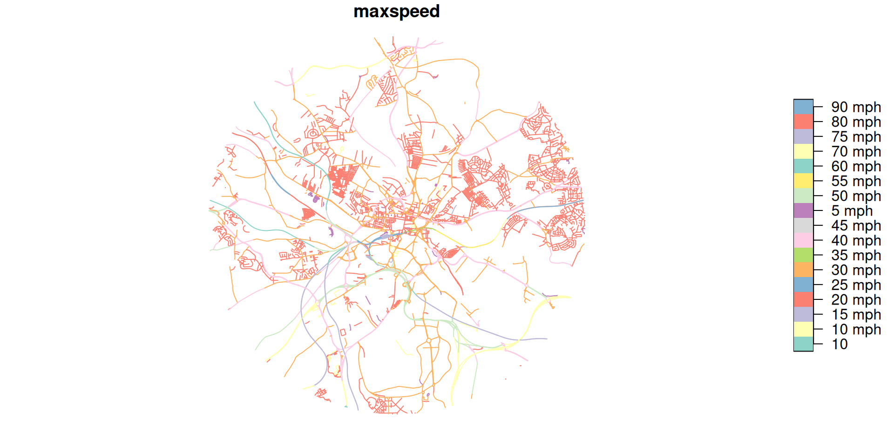
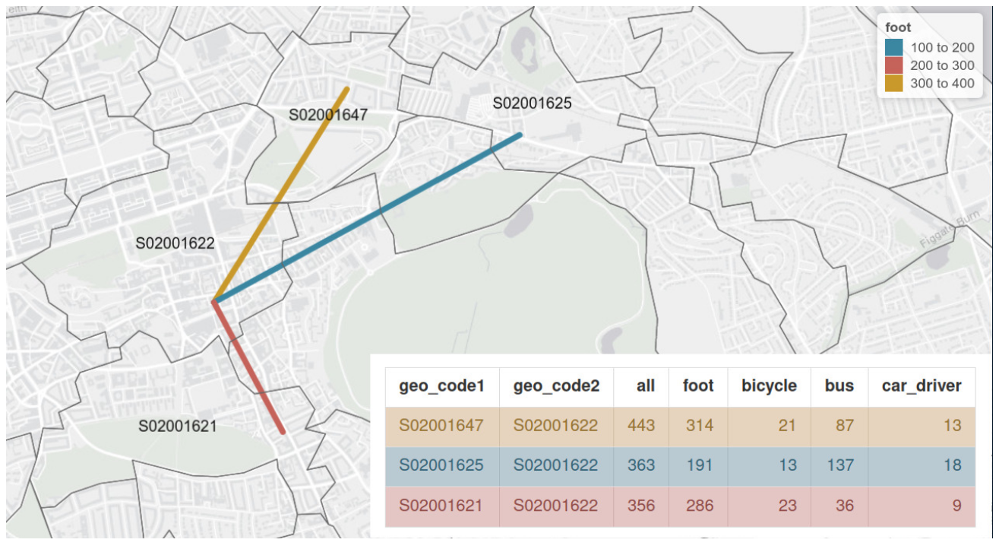

Data Science for Transport Planning: Day 1
September 18, 2025
Welcome!
Data Science for Transport Planning
2-day course
18-19 September 2025
Agenda
- 10:00-11:00 Introduction to Data Science for Transport Planning
- 11:00-12:30 Finding, importing and cleaning transport datasets
- 12:30-13:30 Lunch
- 13:30-15:00 Origin-destination data analysis
- 15:00-15:15 Break and refreshments
- 15:15-17:00 OD Transport data visualisation
Prerequisites
To run the code
- Computer to run the code
- Either: A laptop with R, RStudio or VS Code and Docker or similar installed to run the code locally
- Or: Access to a cloud-based environment for data science (e.g., GitHub Codespaces or Posit Cloud)
Learn and share
The following will help:
- An interest in transport planning and knowledge of transport datasets
- A willingness to learn and share
- A GitHub account (to ask questions on the Discussions page and share your own code)
- Familiarity with data science tools, e.g. R, Python, RStudio, VS Code
Housekeeping
- Connect to the UoL-Guest Wi-Fi network and enter your details.
- GitHub account sign-up if not done already.
- Coffee and lunch: in the social space just outside this room
- Toilets
- Gents toilets can be found on first and ground floors.
- Ladies toilets on the middle and far staircases and ground floor.
- Accessible toilet facilities including a gender neutral toilet, are available on the lower ground floor.
Housekeeping II
- Fire Alarm
- If the alarm sounds, leave the building via the ground floor.
- The assembly point is the grassed area outside
- Use of Extension Leads & Adapters
- Cube adapters are prohibited.
- International chargers are advised against.
- Alternative plugs can be logged/loaned out from the Facilities Office.
WiFi

Setup check
To check you have the necessary software installed, try running the following code.
You should be able to generate the map on the next slide.
Setup check: The result
The DSTP Team
Source: GitHub
About you
- Name
- What tools you currently use for research
- Where you’re from
- A random fact about you
Me
- Currently using VS Code, Quarto, R, Google Gemini etc, Devcontainers
- From Herefordshire, UK, work at the University of Leeds
- Random fact: I run 5 km every Saturday with double buggy
Over to you
The origins of the course
“If only I was told this earlier in my career”
Imagine a workflow that enabled:
- Fewer context switches
- More focus on the content and not style of the work
- Integration of code into your research manuscript
- Automatic generation of results that update when the data change
- Control over how you export and publish your work üòé
- Full reproducibility and control for maximum benefit üöÄ
Reproducible workflows
“Research is considered to be reproducible when the exact results can be reproduced if given access to the original data, software, or code.” Source: displayr.com
Stages of open and reproducible science
Open access to the publications
Open access to data
Open access to the code
Fully reproducible
Project deployed in web app
Example: networkmerge
See paper website: https://nptscot.github.io/networkmerge/ Source: github.com/nptscot
Example: PCT, NPT, biclaR etc.
See biclar.tmobilidade.pt source code: github.com/u-shift (félix2025?).
Course principles
- “Learn by doing”
- “Learn by teaching”
- “We’re all learning”
- “Can-do” and “Go for It” attitude
- “Every error is a learning opportunity”
- “No such thing as a bad question”
- Balance between focused work and comms
Computational infrastructure
Source: “Dependency” by Randall Munroe: xkcd.com/2347/
Software stack

Which IDE to use? Source: tdscience/course
The practical sessions
- Time of in-depth work
- Use the course website as a reference point but spend most of the time in your own environment
- We will support people one-to-one and can do ‘live demos’
Tip
Press Ctrl+Tab to switch from IDE to browser with course content and other things for an efficient workflow
What are transport datasets? A geo typology
Source: Geocomputation with R (Lovelace, Nowosad, and Münchow 2025)
Practical session 0
Set-up: project folder/repo
Option 1: Create an empty folder on your computer (beginner level)
- Via Windows Explore or other GUI
- Via command line (e.g.,
mkdir dstp-rl, but replace ‘rl’ with your initials) - Via RStudio or VS Code
Option 2: Create a new repository on GitHub (more advanced, recommended)
- Via GitHub Desktop (beginner level)
- Via
ghcommand line tool (more advanced, recommended)
Tabsets
The following creates a fresh GitHub repo with GitHub CLI (recommended)
Note: you need to have installed the GitHub CLI and authenticated it with your GitHub account.
Opening your project
Option 1 (RStudio): Open the folder you created in RStudio using the New Project graphical interface menu
Option 2 (RStudio - recommended): Open the folder you created in RStudio using the rstudioapi package, e.g. with the following command in R Console:
Option 3: (VS Code): Open the folder you created in VS Code using the File > Open Folder menu
Option 4 (VS Code - recommended):
Minimise context switching
Any questions before we move to the first practical session?
Session 1 (see Session 1 workbook)
Session 1 in context
- 10:00-11:00 Introduction to Data Science for Transport Planning
- 11:00-12:30 Finding, importing and cleaning transport datasets
- 12:30-13:30 Lunch
- 13:30-15:00 Origin-destination data analysis
- 15:00-15:15 Break and refreshments
- 15:15-17:00 OD Transport data visualisation
Solo working through the practical (until ~12:30)
See practical at tdscience.github.io/dstp/s1
Any questions before the lunch break?
Put your hands up, ask another participant, or use the github.com/tdscience/dstp/discussions
Lunch break (12:30-13:30)
See you back here at 13:30
Session 2 (see Session 2 workbook)
Lecture on Session 2: OD and geographic data
OD data is implicitly geographic (Lovelace, Félix, and Carlino 2022)
Running R/Python code

See Yang’s slides in link at tdscience.github.io/dstp/s2
Exercises
Work through the exercises in the Session 2 workbook
Any questions before the break (15:00-15:15)?
15:00-15:15 Break and refreshments
Session 3
- 15:15-17:00 OD Transport data visualisation
- See Session 3 workbook